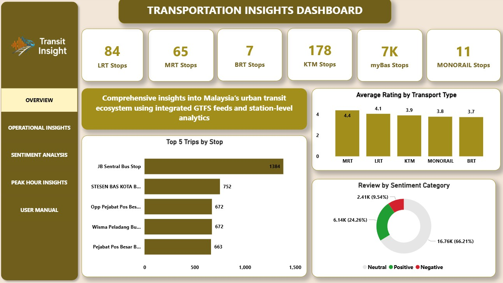
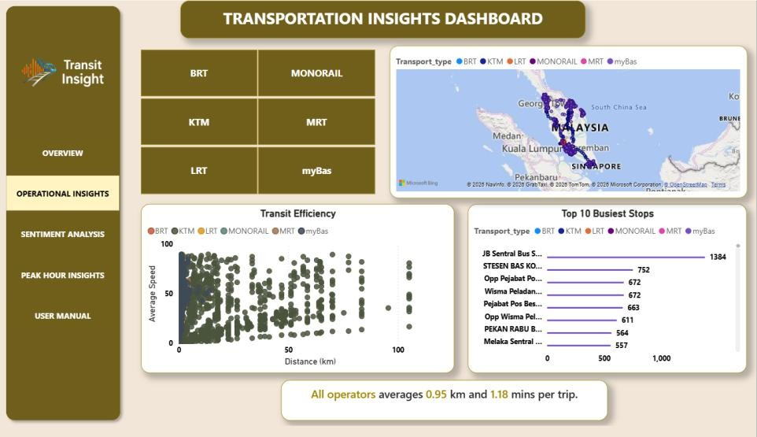
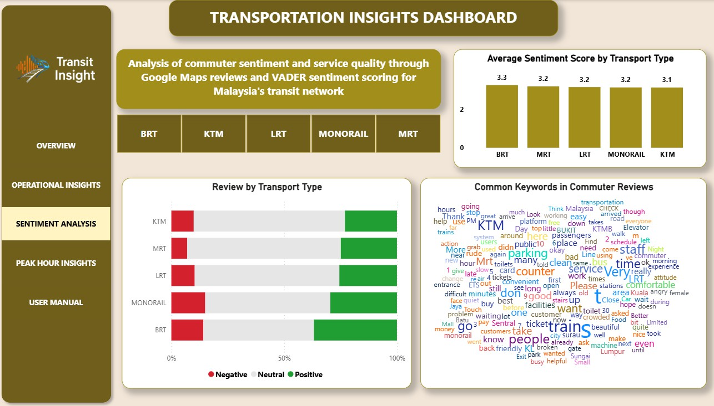
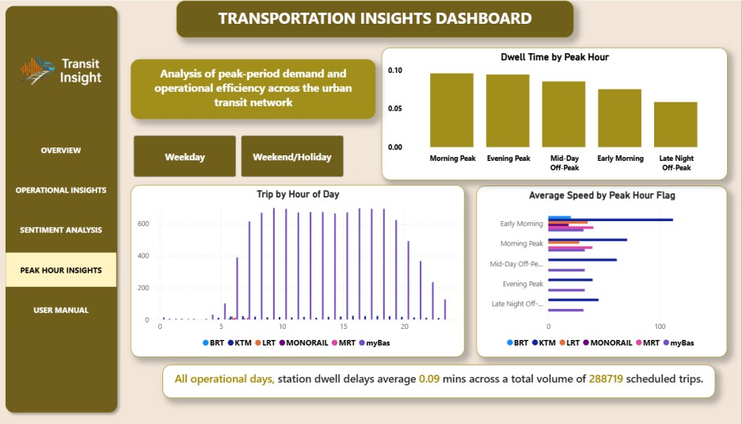

Final-year project · UiTM Arau
Urban Mobility Intelligence
I built Transit Insight to bring Malaysian public transport timetables and station reviews into one Power BI report. Users can explore planned service patterns alongside what commuters said about their stations.
- Scheduled stop records
- 288,719
- Commuter review records
- 25,317
- Transit groups in the export
- 6
Data and workflow
The project uses GTFS feeds for KTMB, Prasarana, and selected BAS.MY networks, alongside Google Maps station ratings and reviews.
Prepare the schedules
I joined routes, trips, stops, stop times, and service calendars in Python and Pandas to calculate planned dwell and inter-stop travel times.
Score commuter reviews
I joined reviews to station metadata by place ID and used NLTK VADER to classify sentiment, using English translations where available.
Build the report
I used Hadoop HDFS for storage and Apache Hive for querying. Power BI and DAX supported comparisons across modes, stations, and time periods.
Tech stack
Python
Ran the scripts that converted the raw schedule and review files into datasets for reporting.
Pandas
Joined GTFS tables and matched reviews to station metadata by place ID. It also helped calculate scheduled dwell and travel times.
NLTK VADER
Scored review text and classified it as positive, neutral, or negative. The scoring used English translations when available.
Hadoop HDFS
Stored the prepared schedule and review files for querying.
Apache Hive
Queried the data stored in HDFS using SQL to inspect and analyze the prepared tables.
Power BI
Brought schedule metrics, station ratings, and review sentiment together in an interactive report.
DAX
Defined measures that recalculate when readers filter by transit mode, station, or time period.
Wix
Hosted the public Transit Insight website and presented the Power BI dashboard to visitors.
What the analysis found
Neutral was the most common sentiment label
Of the 25,317 review records, 66.2% were labeled neutral, 24.3% positive, and 9.5% negative. The scoring workflow assigned a zero score to missing review text, which contributes to the neutral share.
BAS.MY accounts for most scheduled records
BAS.MY contributed 283,236 of the 288,719 schedule records. Compare results within each mode before interpreting differences in raw counts.
Dashboard previews








Evaluation and scope
I evaluated Transit Insight with a quasi-experimental pre/post study and user acceptance testing. The acceptance testing covered ease of use, usefulness, attitude, and intention to use the platform.
The schedule metrics describe planned service. Actual ridership, delays, and cancellations would require observed service data. Review coverage and translation quality affect the sentiment results.